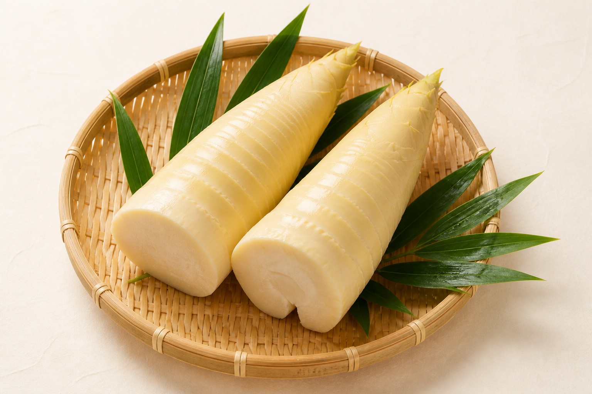
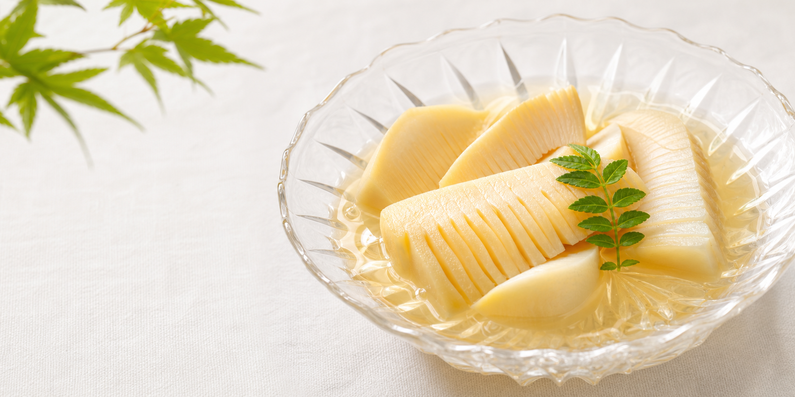
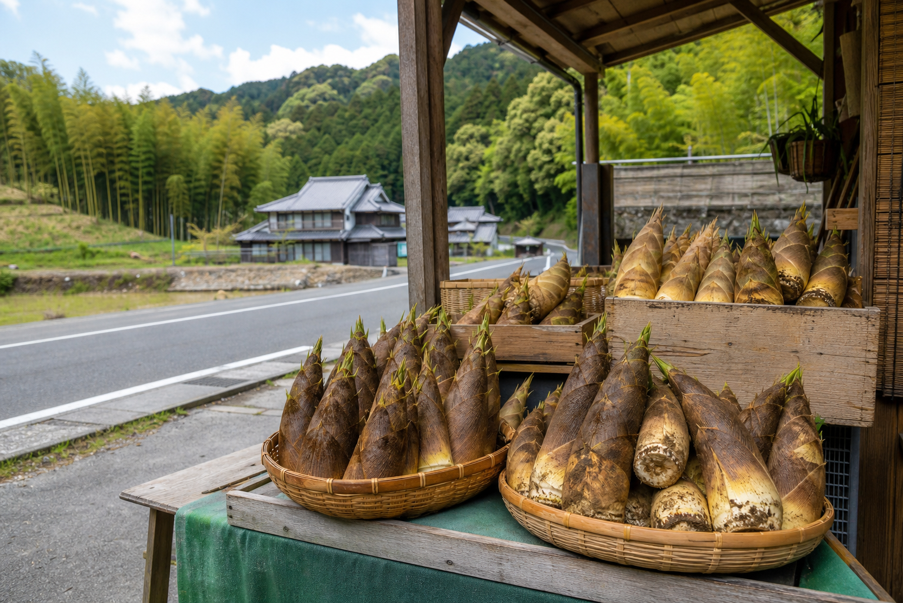

朝掘りだからこそ、美味しい。
たけのこは鮮度が命。山城では、早朝から竹林へ入り、一本ずつ丁寧に掘り起こします。
- みずみずしさ
- 香り
- やわらかな食感
Yamashiro Bamboo Shoot
京都府南部・山城地域は、古くから良質なたけのこの産地として知られています。 土の中で丁寧に育てられる「白子たけのこ」は、日光に当てず育てることで淡い色と繊細な食味を実現します。
春の短い期間だけ味わえる、京都の季節の恵みです。

たけのこは鮮度が命。山城では、早朝から竹林へ入り、一本ずつ丁寧に掘り起こします。
静かな里山、朝露に濡れる竹林、長年受け継がれてきた栽培技術が品質を支えます。
おすすめの食べ方

下処理したたけのこをしっかり冷やし、そのまま味わうことで上品な甘みを楽しめます。
Spring Only
たけのこは、一年中楽しめるものではありません。 だからこそ、春の訪れを感じさせてくれる特別な存在です。 この季節だけの美味しさを、ぜひご家庭で。
Local Sales
山城地域の道の駅・直売所では、朝掘りたけのこを販売しています。 地元ならではの新鮮なたけのこを、観光やドライブの途中にもお楽しみください。
